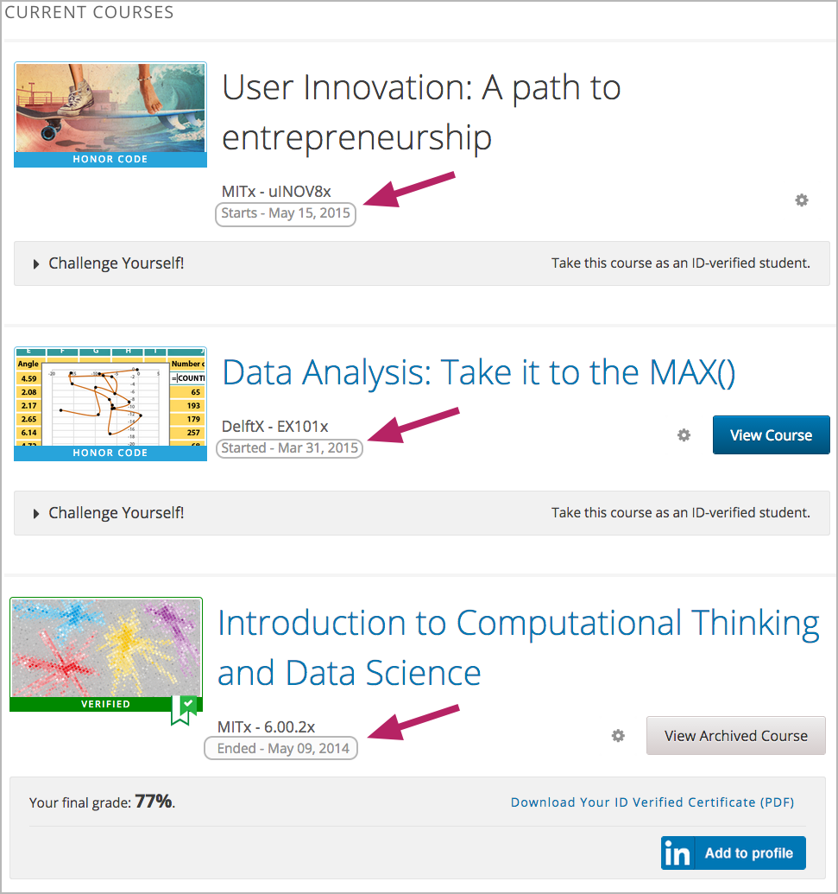

3.2. 设置开始和结束日期¶
课程以及注册开始日期和结束日期对未来学生和已注册学生都是非常重要的。 注册开始以后，期望加入该课程的学生可以在edX课程目录中看到课程总结页面，然后加入该课程。 已注册学生将在学生界面中看到课程的开始日期。
更多关于课程开始和结束日期的信息，以及日期设置指南，请参阅以下主题。
3.2.1. 学生视角查看起止日期¶
如果课程还未开始或正在进行，未来学生和现有学生都能看到课程起始日期。 课程结束日期仅在课程结束以后对已注册学生可见。
未注册本课程的学生可以在课程总结页面中查看课程开始日期。
{kind=link}
注册参加课程的学生可以在学生界面中看到课程的开始或结束日期。 这取决于课程是否已经结束。如果课程未开始或在进程中，学生将看到开始日期。 如果课程已经结束了，学生则看到结束日期。
{kind=link}
3.2.2. 确定起止日期¶
EdX建议您认真考虑课程的注册起始日期和结束日期。 在您决定了日期以后，您将在Studio中的 日程与细节 页面中设定日期。 EdX建议您在计划开始课程前一周确认所有重要日期。
Note
您必须与您的edX项目经理就edX.org网页上的课程开始日期进行交流，以确保课程总结页面的日期是正确的。
3.2.2.1. 课程开始时间¶
课程开始时间决定学生何时能进入已发布的课程内容。 默认情况下，课程开始时间为 01/01/2030 00:00 UTC 以确保课程不会在您希望设定的时间之前开始。 您必须将默认日期修改为您的课程开始的正确日期。
EdX推荐您将课程开始时间设置为一天中较早的时间，一般设置为00:00 UTC之前。 学生常希望课程在自己的时区内已经开始，并尝试在开始日期中进入课程。 如果您没有指定课程起始时间，学生将会看到默认的时间：格林尼治时间 (UTC)00:00。
学生可以在课程开始之前看到课程的某些部分。 例如，他们可以看到您的 课程信息 页面，一旦注册本课程以后，他们可以看到课内讨论主题。 更多信息请参阅 创建全课堂讨论课题 。
Note
您可以为您的课程设置广告日期，这与时间表和详情页面的设置课程开始日期不同。 您若对准确的开始日期不确定，可能会想要这样做。 例如，您可以将开始日期显示成2014年春季。 更多信息请参阅 设置显示开始日期。
3.2.2.2. 课程结束时间¶
学生修的学分达到获得修课证书要求，课程就该结束了。 结束之后学生可以继续完成课程，但是不能在结束之后获得证书。 课程结束之后，获得修课证书的学生能够审视自己。
Important
您若没有设置课程结束日期，学生将不能获得修课证书。
3.2.2.3. 注册起始时间¶
注册起始时间指定了何时学生可以开始注册该课程。 请确保注册起始时间足够提前，让学生能够注册并为课程做好准备。
3.2.2.4. 注册结束时间¶
注册结束时间指定了何时学生不能再注册本课程。 请确保注册时间充足，让学生能够参加本课程。 注册结束时间不能晚于课程结束时间。
Important
在edx.org的合作伙伴课程中，一旦过了注册截止日期，课程就不再显示在目录中了。 edX建议您尽可能地维持开放注册状态。更多信息请询问您的edX项目经理。
3.2.3. 设定课程时间和注册时间¶
您将在Studio中为课程设定起止时间和注册时间。
在 设置 菜单中选择 日程与细节
在 日程与细节 页面中选择 课程时间表 ， 并用您的信息替代默认日期和时间。
修改后请点击页面右下角的保存按钮。
输入日期和时间后，请保存您的修改。
Note
本页面中的时间域以及学生看到的时间均为格林尼治时间(UTC)。
我们建议您在计划开课前一星期确认所有重要时间准确。
3.2.3.1. 设置显示开始日期¶
您能设置显示开始日期，这与时间表和详情页面的设置课程开始日期不同。 您若对准确的开始日期不确定，可能会想要这样做。 例如，您可以将开始日期显示成 2015年春季 。
设置显示开始日期：
- 从设置栏中选择高级设置
- 找到显示开始的关键按键，默认值为零。
- 输入您想显示的开始日期。您能使用任何字符，附上双引号。若您想将字符格式化为日期，
（例如，格式化为 02/01/2014），其值就被语法化，呈现给学生的是日期。

- 在本页的末尾点击保存改动
现在学生可以在学生面板中看到 课程显示开始日期 。
如果您没有更改默认开始日期(01/01/2030)，课程显示开始日期 将为空值。 课程面板将不会显示该课程的开始日期。学生只能看到目前课程未开始状态。